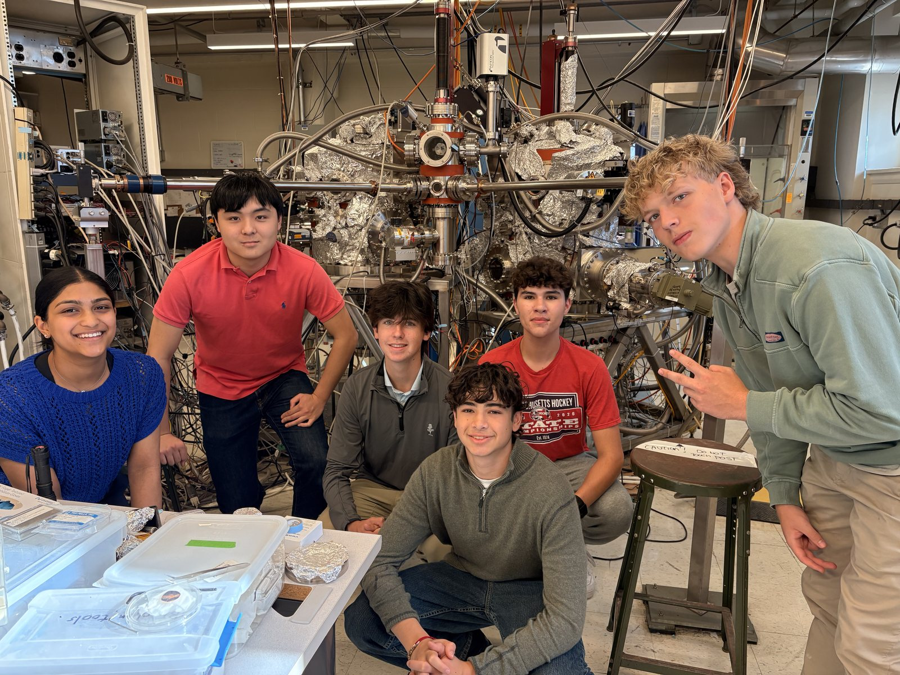
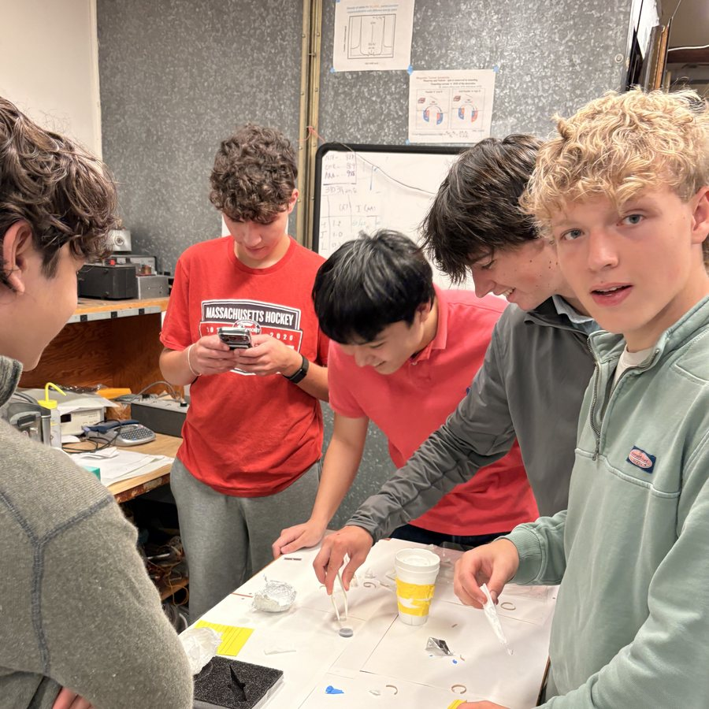
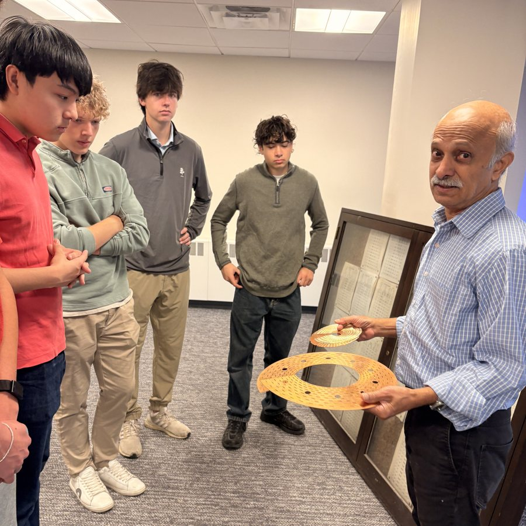
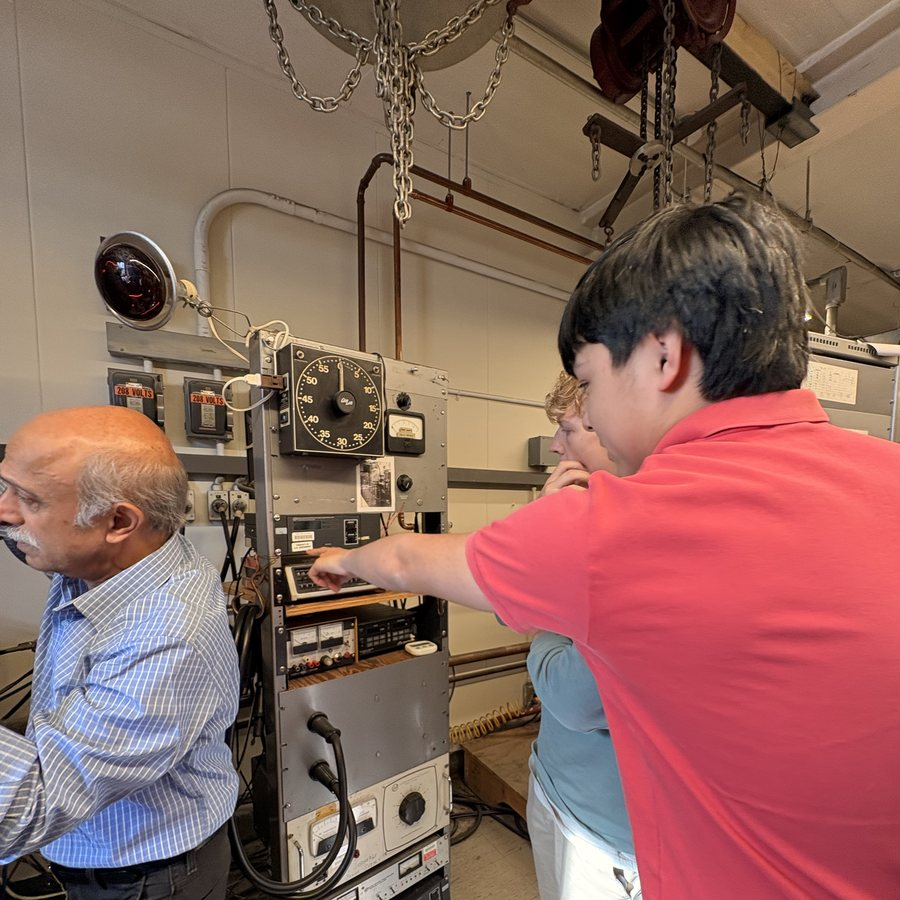

Oct 9, 2026 · MIT, Cambridge
Francis Bitter Magnet Laboratory at MIT
We spent an afternoon at MIT's Francis Bitter Magnet Laboratory, now part of the Plasma Science and Fusion Center. Dr. Jagadeesh Moodera, a senior research scientist in MIT Physics, hosted us. His group studies thin films of magnetic and superconducting materials.
He showed us copper plates from the lab's Bitter magnets and walked us through the vacuum systems and cryostats his group uses. We finished at a lab bench, cooling a superconductor with liquid nitrogen and testing it with small magnets.
Thank you to Dr. Moodera for hosting us.